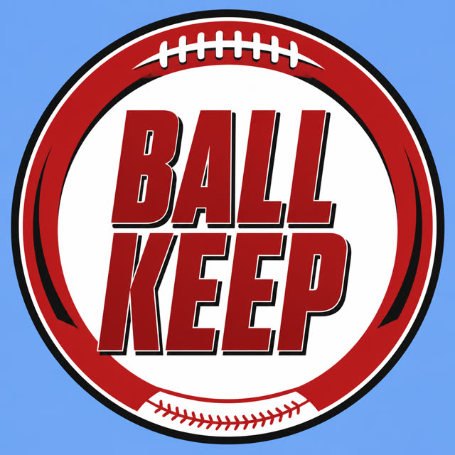

BALL KEEP
40 boards · Superflex · PPR · Sleeper
Player File · WR BAL
WR · BAL · 22 · USC
2026 · through Week 7
| Year | G | Snap % | Touches | Tgt | Rec | Yds | TD | Rush | RuYd | ReYd | PPR |
|---|---|---|---|---|---|---|---|---|---|---|---|
| 2026 | 2 | 46.4% | 5 | 8 | 5 | 51 | 0 | 0 | 0 | 51 | 10.1 |
| Wk | Opp | Snap % | Touches | Tgt | Rec | Yds | TD | Rush | RuYd | ReYd | PPR |
|---|---|---|---|---|---|---|---|---|---|---|---|
| 1 | @ IND | 39.7% | 1 | 3 | 1 | 11 | 0 | 0 | 0 | 11 | 2.1 |
| 2 | vs NO | - | - | - | - | - | - | - | - | - | - |
| 3 | @ DAL | - | - | - | - | - | - | - | - | - | - |
| 4 | vs TEN | - | - | - | - | - | - | - | - | - | - |
| 5 | @ ATL | - | - | - | - | - | - | - | - | - | - |
| 6 | @ CLE | 54.4% | 4 | 5 | 4 | 40 | 0 | 0 | 0 | 40 | 8.0 |
| 7 | vs CIN | - | 3 | 5 | 3 | 25 | 0 | 0 | 0 | 25 | 5.5 |
| Total | 46.4% | 8 | 13 | 8 | 76 | 0 | 0 | 0 | 76 | 15.6 |
Regular-season line from Sleeper. Touches are carries plus catches. Yards are rushing plus receiving. Snap % is offensive snaps divided by team offensive snaps.
Board graph
Every Board
| Source | Rank |
|---|---|
| KeepTradeCut SF | 125 |
| Dynasty Trade Calculator | 136 |
| Mike Clay (ESPN) | 142 |
| Fantasy Footballers | 147 |
| PlayerProfiler | 147 |
| Rebuild board | 147 |
| RotoBaller Dynasty | 147 |
| DLF Superflex | 149 |
| Rotoworld | 149 |
| Sleeper Superflex | 149 |
| Underdog ADP | 149 |
| Contender board | 149 |
| DLF ADP mix | 149 |
| FantasyData Superflex | 149 |
| Superflex market mash | 149 |
| PFF Dynasty | 151 |
| Dynasty Nerds | 164 |
| FantasyPros ECR | 165 |
| ESPN (Karabell) | 181 |
BK News
All player pages · The Keep · The Board · Recent deals · Hot 'n' Cold · BK News · Trade calculator